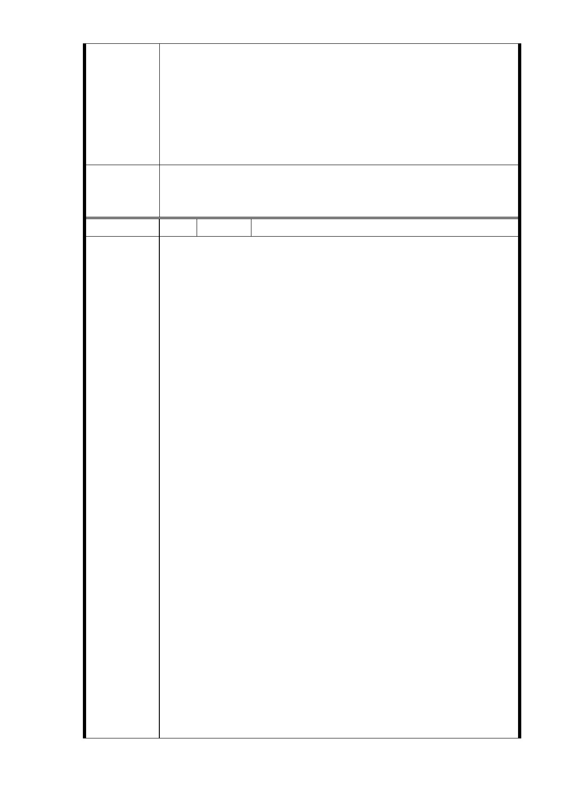

意 見 2.依 103 年 2 月 21 日本計畫都市計畫委員會第 5 次專案小組
審查意見略以：「本案用地變更部分同意依市府捷運局於簡
報中所擬建議，即……『R04 站南側捷二用地，維持公展範
圍（基地面積 3,328 ㎡），並辦理土地開發』、……續提委
員會（大會）審議。」，惟就本基地之情形及陳情人之意見，
會在都市計畫委員會中報告，仍應依都市計畫委員會審議
決議辦理。
一、R04 站南側捷二用地，維持公展範圍（基地面積 3,328
委員會決議
㎡），並辦理土地開發。
二、同「市府回應意見」。
編 號 16 陳情人 鍾志成等 7 人
陳情主旨：
一、懇請將臺北市信義路六段捷運信義線東延段 R4 站土地於
都市計畫變更後訂定「細部計畫」時，請比照信義路捷
運沿線捷運站土地變更為「商三」使用分區容積率不宜
仍爰用舊有使用分區「住三」容積率！
二、臺北市都市計畫委員會議中認為 R4 站北側違章建築戶達
50 餘戶及南側七層樓問題，建議市政府增加容積率來解
決。
敬請擇一裁示促使市容美化與市民共創雙贏。
陳情依據：憲法第十五條人民之生存權工作權及財產權政府
應予保障。
陳情說明：
一、陳情人等係臺北市捷運信義線東延段 R4 站土地所有權人
（信義路六段 35 至 63 號等地主）。
陳 情 理 由 二、信義路五段從 101 大樓至松德路原非商業區，為都市發
展始改為商業區，緊鄰信義路六段之 R4 站使用分區本質
已改變，原使用分區「住宅區」容積率即應變更為使用
分區「商業區」，並調整建蔽率，信義路捷運全線應一
視同仁比照「商三」的基本容積率計算才符合公平公正
與合理合法！
三、交通建設是百年建設，臺北市捷運發揮無比功能績效卓
越是大家有目共睹，外國觀光客也大為讚賞，現今該地
區土地問題，臺北市都市計畫委員會歷經多次討論業已
深入了解，如果市政府能將土地分區由「住三」改為「商
三」，或增加容積率，則所有問題都能迎刃而解。
四、今年八月一日，臺北市都市計畫委員會曾討論捷運信義
線東延段 R4 站北側因土地取得發生困難，只徵收松臺公
寓五樓之土地規劃為出入口，該五樓地主非常驚訝惶恐
失望無法接受，如不照原計畫全部松臺公寓建造共構恐
- 59 -